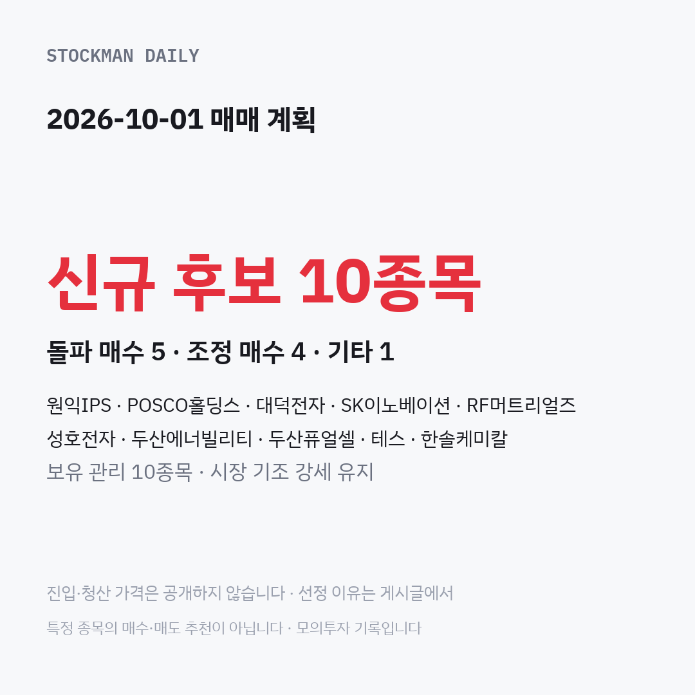

2026-10-01 매매 계획이 준비됐습니다.
신규 후보 10종목 — 돌파 매수 5 · 조정 매수 4 · 기타 1
- 원익IPS (돌파 매수): 최근 오르는 힘이 가장 강하고 거래도 활발히 붙은 종목
- POSCO홀딩스 (조정 매수): 앞선 후보가 조건에 맞지 않아 빠지면서 대신 오른 종목
- 대덕전자 (돌파 매수): 전날 크게 오르고 거래도 많이 붙어 상위에 든 종목
- SK이노베이션 (조정 매수): 전날 사지 못해 이어받은, 크게 빠졌다 살짝 반등한 종목
- RF머트리얼즈 (돌파 매수): 오르는 흐름이 좋고 공급계약 소식도 있었던 종목
- 성호전자 (조정 매수): 며칠 내리다 전날 크게 반등해 쉬어 갈 때를 노리는 종목
- 두산에너빌리티 (돌파 매수): 전날 사지 못해 이어받은, 흐름이 좋았던 종목
- 두산퓨얼셀 (조정 매수): 며칠 빠졌다 살짝 반등했지만 적자와 부채는 눈여겨볼 종목
- 테스 (돌파 매수): 전날 제법 오르고 거래도 꾸준히 붙어 후보에 든 종목
- 한솔케미칼 (기타): 목표에 닿아 이익을 챙긴 뒤에도 더 올라 다시 지켜보는 종목
보유 관리 10종목 · 시장 기조 강세 유지
전략 풀이
- 돌파 매수: 전날 가장 높았던 가격을 넘어설 때만 매수하고, 넘지 못하면 그날은 매수하지 않습니다.
- 조정 매수: 전날보다 조금 내려온 가격을 미리 정해 두고, 거기까지 내려와야만 매수합니다.
진입·청산 가격은 공개하지 않습니다. 결과는 청산 복기 영상으로 확인해 주세요.
특정 종목의 매수·매도 추천이 아닙니다 · 모의투자 기록입니다 본 채널은 특정 종목의 매수·매도를 추천하지 않습니다.
진입·청산 가격은 공개하지 않습니다 · 특정 종목의 매수·매도 추천이 아닙니다 · 모의투자 기록입니다